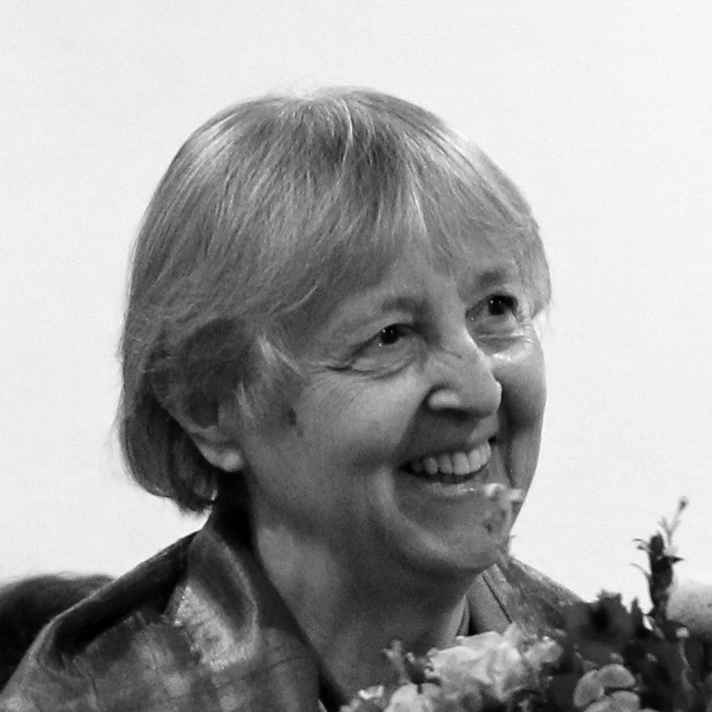

Dirigenti
- Zakladateľka a dirigentka Kvapôčiek Milica Kailingová (jar 1968 – jar 1971)
- Jana Bubelková/Nagajová (jar 1971 – jar 1974)
- Drahuška Markušová (jeseň 1974 – jar 1975)
Tím
- Milica Machajdíková/Kailingová (jar 1968 – jar 1971)
- Milena Jurčová/Uhlíková (jar 1968 – jar 1971)
- Jana Bubelková/Nagajová (jeseň 1968 – jar 1974)
- Noemi Elisová/Krupová
- Zuzka Luptáková/Vyskočilová (jar 1971 – jar 1975)
- Drahuška Markušová (jeseň 1973 – jar 1975)
Deti
V tomto období v Kvapôčkach spievali:
Danka Polohová, Paľko Poloha, Rút Betinová, Ester Betinová, Evka Mazáková, Zuzka Luptáková, Ruženka Boocová, Dušan Číčel, Blaho Číčel, Juditka Matejová, Hanka Luptáková, Dáša Bálintová, Rasťo Betina, Samko Matej, Martinko Matej, Daniel Jurčo, Martin Jurčo, Odeno Lupták, Martinko Číčel, Ľubko Bálint, Zuzka Potúčková, Svetlanka Markušová, Janka Rosová, Ľubka Rosová, Janko Kucek, Ivanko André, Paľko Ciesar, Vierka Borošová, Dalma Cséfalvayová, Danko Matej, Jožko Hornáček, Janko Strelinger, Martuška Bálintová, Danko Potúček, Martinko Ďuriška

Rozpráva Zakladateľka Kvapôčiek Milica Kailingová
Ako to všetko začalo
História jedného z najstarších slovenských detských spevokolov Kvapôčky začala v roku 1968, keď ma oslovil laický kazateľ zboru CB Róbert Poloha s návrhom, aby som sa pokúsila vytvoriť podobný priestor pre deti, ako mal možnosť pozorovať v Spevokole mladých. Obaja spoločne sme potom oslovili viaceré rodiny s deťmi, a tak vznikla prvá spevácka skupina asi 15 detí. Spevokol na návrh malej Juditky Matejovej/Bánovej prijal názov Kvapôčky podľa knižky slovenskej spisovateľky Kristíny Royovej Ako kvapôčka putovala.
Meno Kvapôčky sa stalo symbolom nadviazania na posolstvo a dedičstvo duchovnej práce s deťmi podľa príkladu sestier Kristíny a Márie Royových. Z príbehu tejto knižky si deti spolu so mnou a korepetítorkou Milenou Jurčovou/Uhlíkovou ujasnili základné princípy svojho pôsobenia v Kvapôčkach – „robiť na zemi dobre“ a „chváliť Boha piesňami“. Hneď na prvý nácvik dostali Kvapôčky do daru svoju hymnu – Vladimír Betina, otec troch Kvapôčiek, zložil na známu melódiu toto posolstvo:
Kvapôčky padajú z neba na lúky, polia i háj, poslušne idú, keď treba ovlažiť vyprahlý kraj.
Kvapôčky smädná zem pije, prameňom dávajú zrod; bystrina, potok z nich žije, Dunaj, Váh s bohatstvom vôd.
Kvapôčky čerstvého dažďa oživia prírodu hneď, úlohu plní si každá, napojí vtáčka, či kvet.
Kvapôčky z oblakov Božích máme byť pre svoju vlasť, tam, kde sa ľudský žiaľ množí, chceme sa do služby klásť.
Nikto na počiatku netušil, aká bude táto pieseň predvídavá, že z malého pramienka sa naozaj v priebehu rokov stane veľký potok až rieka s bohatstvom vôd… že Kvapôčky budú putovať už 50 rokov a že sa v ich spoločenstve vystrieda niekoľko generácií detí. A tiež, že v priebehu putovania sa vždy nájdu ľudia, ktorí do tejto služby odovzdajú naplno svoje schopnosti, obdarovania, svoj život.
Prvý zájazd Kvapôčiek na Starú Turú (spolu s viacerými rodičmi) mal význam hlavne preto, že sme zažili prostredie, z ktorého sa šírilo duchovné posolstvo na celé Slovensko a piesňami sme povzbudili tamojšie spoločenstvo veriacich. Navštívili sme cintorín, kde sú pochované Kristína a Mária Royové, na ktorých dielo Kvapôčky nadviazali a spravili sme si aj výlet na Čachtický hrad.
Rozpráva Jana Nagajová
Repertoár
Najskôr to bola hymna Kvapôčiek, potom piesne prekladané z češtiny, neskôr pribudla vlastná tvorba, preklady, originálne texty aj hudba, mnohé z týchto piesní boli v roku 1977 zaradené do Prídavku ku Kresťanskému spevníku (malý čierny detský spevník). Medzi prvé piesne, ktoré som prekladala z češtiny, patrili napr. Verím, že Pán Boh je na nebi, Pre všetkých prekrásnu pieseň mám, Kuriatka spia; medzi novšie s originálnym textom aj hudbou: Aký krásny stvoril Pán Boh tento svet (Jana Nagajová/Ivan Valenta) , Keď sa ľudia opýtajú (Jana Nagajová/Ivan Valenta), Ovečka sa tvoja vinie (Mária Rafajová/Ivan Valenta)
Hudba a služba
Snažili sme sa čím častejšie spievať na bohoslužbách na Cukrovej, do iných miest sme sa kvôli politickým obmedzeniam dostali zriedka, spievali sme v Leviciach na konferencii CB (ako Kvapôčky, aj spolu so Spevokolom mladých, ktorý tiež dirigovala Milica), na Starej Turej. Pred Vianocami sa začalo s tradíciou koledovania. Mladí ľudia, ktorí študovali v Bratislave, prinášali do svojich domácich zborov aj piesne Kvapôčiek, takže sa ich naučili aj ďalšie deti.
Vďaka novému bratislavskému kazateľovi Františkovi Ciesarovi sme sa v roku 1972 dostali na zájazd na Těšínsko, spievali sme v 3 zboroch (Horní Suchá, Hrádek a Český Tešín), v pásme zaznelo 19 piesní. Povzbudzovalo nás, ako na nás reagovali počúvajúci. Okrem spievaných piesní boli niektoré deti schopné povedať aj svoje svedectvo. Na nácvikoch sa viaceré modlili.
Vzťahy a komunita
Veľkou výzvou pre mňa bola zmena, keď sa osvedčená dirigentka Milica Machajdíková/Kailingová rozhodla odovzdať Kvapôčky mne, zároveň s ňou odišla fundovaná klaviristka Milena Jurčová/Uhlíková a staršie deti. Bolo potrebné získať nové deti, náhradu za klavírny sprievod, aj piesne vhodné pre mladšie deti. Samozrejme veľmi dôležité bolo získať si dôveru rodičov, ktorí boli zvyknutí na Milicu.
Vzťahy medzi Kvapôčkami boli silné, boli to deti z rodín zboru, ktoré sa často navštevovali, takže sa kamarátili. Ja som učila detskú besiedku a tiež som navštevovala rodiny, takže deti, ktoré ma zažili v besiedke a pri hrách v rodine, prirodzene nadviazali na známy vzťah aj v Kvapôčkach. Vzťahy boli také silné, že pokračovali aj po mojom odchode do Bardejova a trvajú doteraz.
Hodnoty a vzťah s Bohom
Nácvik sa začínal modlitbami vedúcich aj detí, v krátkom úvode sme sa snažili zaujímavým spôsobom posilniť myšlienku spievania na oslavu Pána Boha a života správnej Kvapôčky.
Silný program Skúsenosti s Bohom bol aplikáciou textov piesní Skús byť ako Daniel a Keď Mojžiš s ľudom Božím preč z Egypta sa bral. O každej novej piesni sme sa rozprávali, aby ju deti mohli spievať ako svoje vlastné vyjadrenie.
Ako povzbudiť deti v dobe nepriaznivej pre veriacich ľudí, aby sa nehanbili a nebáli? (1968-1975)
V Kvapôčkach boli niektoré deti, ktorých otcovia alebo príbuzní boli v nedávnej minulosti väznení preto, že sa neskrývali do anonymity, ale boli aktívni v práci zboru. Mladí ľudia v zbore na Cukrovej boli povzbudzovaní k uvedomovaniu si Božej zvrchovanosti a svojej hodnoty v Božích očiach. Preto sme aj my povzbudzovali Kvapôčky k tomu, aby sa nebáli, ale napríklad aj svojím prístupom k povinnostiam v škole a svojím správaním sa k iným ľuďom dokazovali, že žijú správne, že Pán Boh je s nimi. Výhodou oproti dnešku bolo, že nemali toľko mimoškolských aktivít ako dnešné deti.
Ako Kvapôčka putovala?
1977 – 1983
Dirigenti
Tím
- Danka Staroňová/Juríková (1977 – 1983, okrem šk.r. 1979 – 1980, kedy sa vrátila do Suchej)
- Zuzka Potúčková (korepetítorka, 1978 – 1983)
- Dáša Bálintová/Danelová (1977 – 1978 niekoľko mesiacov)
- Edita Šalaiová/Piskáčková (1977 – 1978 niekoľko mesiacov)
- Daniel Machajdík st. (1981 – 1983 externý člen)
- Petr Michoněk (1982 – 1983)
Deti
V šk.roku 1977 – 1978 a 1978 – 1979 bolo v Kvapôčkach cca 20 detí, v nasledujúcich rokoch počet narástol na 30-34 detí.
V tomto období v Kvapôčkach spievali:
Marta Bálintová, Sväťo Betina, Robert Boroš, Lenka Borošová, Palko Boroš, Martin Číčel, Slávo Číčel, Hanka Číčelová, Katka Číčelová, Zuzka Číčelová, Borka Číčelová, Zuzka Gőrnerová, Janko Havelka, Igor Kamenský, Otilka Kamenská, Miško Kamenský, Danka Komáriková, Janko Komárik-Nino, Tomáš Komrska, Janko Komrska-Anino, Benjamín Komrska-Benino, Támar Komrsková, Peter Komrska, Peter Kucek, Jožko Lupták, Števo Machajdík, Dávid Machajdík, Melita Machalíková, Natália Markušová, Marek Markuš, Zora Markušová, Marína Markušová, Martin Matej, Vlado Matej, Roderik Mihel, Helga Mihelová, Katka Mosná, Dáša Móžiová, Katka Nagyová, Martin Rosa, Ľubka Rosová, Tomáš Rosa, Marek Smolinský, Daniel Smolinský, Hanka Tallová, Peter Tallo, Tomáš Tuchyňa, Alenka Tuchyňová
Rozpráva Milica Kailingová
Repertoár
V roku 1977 bol vydaný spevník detských piesní pod názvom Prídavok ku Kresťanskému spevníku.
V ňom sa nachádzali v tom čase nové piesne, ktoré sme ako Kvapôčky uvádzali do života. Išlo poväčšine o pôvodnú slovenskú hudobnú i textovú tvorbu, resp. preklady. Autori piesní: Vladimír Betina, Slavoj Krupa, Jana Nagajová, Mária Rafajová, Ján Rosa, a osobitne bohatá detská piesňová tvorba Ivana Valentu, ktorý dal piesňam i dobre hrateľnú klavírnu sadzbu.
Postupne sa repertoár rozšíril o spirituály, renesančné kánony, ľudové piesne, trampské, folkové, Taizé... následne aj o súčasnú kresťanskú tvorbu iných národov. Tieto piesne v prekladoch Jany Nagajovej vychádzali v samizdatovom spevníku pre mládež Gitara sanctorum.
Letné pobyty
- 1979 – Havířov-Suchá / iba najstaršie deti (u Staroňovcov)
- 1980 – Tyra / všetci (na pozvanie br. Juraja Ciesara - brata nášho kazateľa Františka Ciesara)
- 1981 – Lazy pod Makytou / všetci (rodný dom Ciesarovcov)
- 1981 – Lazy pod Makytou / staršie dievčatá z Kvapôčiek BA + dievčatá z BJ s J. Nagajovou + dievčatá z Tešínska s J. Ciesarom
- 1982 – Čeladná / staršie deti (chalupa Michalkovcov z Ostravy)
- 1982 – Bernolákovo / mladšie deti (Borošovci -oh, tá borošovská pohostinnosť..!)
- 1983 – Lazy pod Makytou / mladšie deti
- 1983 – Muráň / staršie deti
V roku 1979 sme uskutočnili historicky prvý letný pobyt (LP) Kvapôčiek. Stalo sa tak na podnet najstarších detských členov. Týždňové pobyty sa postupne rozšírili na dvojtýždňové – delené na staršie a mladšie deti, aby sme mohli témami aj formou lepšie naplniť ich potreby. Pravidelne sa ich ako organizačná pomoc zúčastňovali niektorí rodičia detí a čo je kľúčové - tiež noví mladí kresťania zo zboru aj z mimozborového prostredia, ktorí nám kládli nové otázky,
a tak nás nútili opustiť zaužívaný cirkevnícky jazyk, a niekedy i spôsob života. Títo mladí ľudia – často umelecky nadaní, či zameraní na trampovanie a prírodu – ovplyvnili svojou prítomnosťou celkový charakter a program LP.
Tak sme napr. s Danielom Pastirčákom na Lazoch 81 robili výtvarné stíšenia, ktorých ovocím bola výstava a vernisáž obrazov namaľovaných deťmi.
Tieto Lazy mali svoje vyvrcholenie v uvedení predstavenia inscenovanej poviedky K. Kolmana: Bez lásky – o ťažkom osude siroty-hrbáčika. Hlavnú postavu zahral Vlado Matej – a to sme vtedy vôbec netušili, že raz bude nositeľom zmysluplných sociálnych programov v našej krajine :)
Celé predstavenie pripravili a naštudovali deti samotné, ako prekvapenie pre mňa.
Scenár a réžia: Marta Bálintová, Tomáš Komrska /
Scénická hudba: Marta Bálintová, Dagmar Valentová ml.-Ejka, Peter Kucek /
Kulisy: Marta Bálintová, Tomáš Komrska a deti z Kvapôčiek /
Maskéri: Drahomíra Markušová, Daniel Pastirčák /
Herci: Vlado Matej, Tomáš Komrska, Danka Komáriková, Hanka Číčelová, Jozef Lupták, Marek Markuš, Danka Staroňová a.h., Daniel Pastirčák a.h.
V Tyre sme zrealizovali vtedy obľúbený formát Televízneho klubu mladých (TKM), ktorý sme naplnili scénkami, dialógmi, piesňami, poéziou, diskusiou – všetko zo života a tvorby osobností prebudeneckého hnutia, čomu sme sa venovali celý uplynulý školský rok. Nedá sa zabudnúť na „veľkoplošnú obrazovku“, ktorú z dverí medzi kuchyňou a izbou chalupy vytvoril Tomáš Komrska.
S Danielom Pastirčákom a Petrom Michoňkom sme v Čeladnej rozmýšľali o umení, o jeho poslaní v živote jednotlivca, cirkevného spoločenstva i spoločnosti vôbec, o Bohu, stvorení, kráse, pravde… púšťali sme si hudbu, ktorú deti denne počúvajú a analyzovali sme piesňové texty z oblasti populárnej či rockovej hudby.
Na Muráni Petr Michoněk a Vlado Pongrác-Pongy zásadne ovplyvnili náš postoj k čundrákom a trampom, ktorých trasa na hrad viedla bezprostredne popri ´našej´ horárni. Prijímali sme ich pri ohni, aby sa zohriali, podávali sme im čaj a chlebíky, spievali sme s nimi, učili sme sa vnímať ich inú kultúru a pohľad na svet.
Od začiatku sme na LP zaviedli Večery otázok a odpovedí, kde žiadna otázka nebola tabu a ak niekto potreboval ešte osobnejší rozhovor, ponúkli sme deťom osobné prechádzky či rozhovory v izbe alebo stane. (Tomášov pamätný veľký drevený otáznik :)
Týždeň pre mladšie deti sme pripravovali spolu s najstaršími Kvapôčkami – obsah celého programu i spôsob, ako to odovzdať tým mladším; takto rástli a preberali osobnú zodpovednosť.
Pobyty obsahovali aj ďalšie vzrušujúce aktivity, ako sú športové olympiády, nezabudnuteľné nočné pochody, ale i spevácke sústredenia, hudobné súťaže Harfa pre tam vytvorené hudobné skupiny. Toto všetko rozvíjalo tvorivý potenciál detí, aj ich schopnosť rozpoznávať a tvoriť hodnoty.
Letné pobyty za totality neboli povolené, a tak sme si boli vedomí existenčného ohrozenia nás vedúcich, aj tých, ktorí nám poskytli svoje domy či chalupy. Ako príklad spomeniem rozhovory so zástupkyňou riaditeľa školy, kde som pôsobila, v ktorých ma upozorňovala, že ak niekto oficiálne nahlási moje letné aktivity s deťmi, riaditeľ ma musí okamžite prepustiť. Všetko sme konali iba v plnej dôvere voči Pánu Bohu a jeho ochrane, vo vedomí modlitebného zázemia mnohých ľudí.
{kind=link}
{kind=link}
{kind=link}
{kind=link}
{kind=link}
{kind=link}
{kind=link}